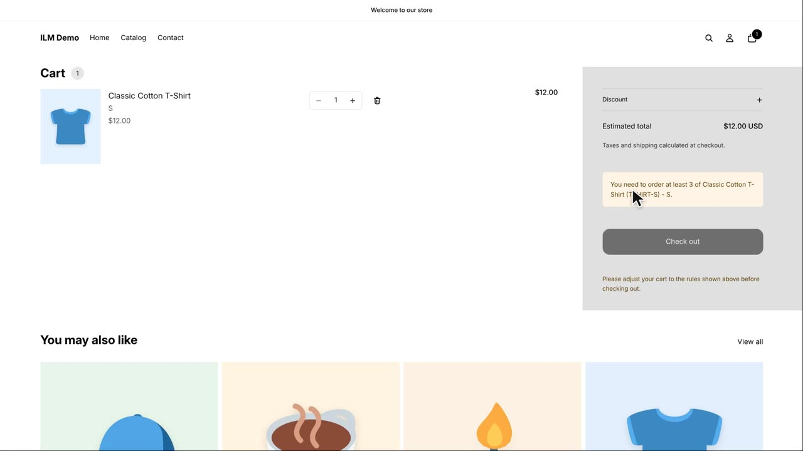
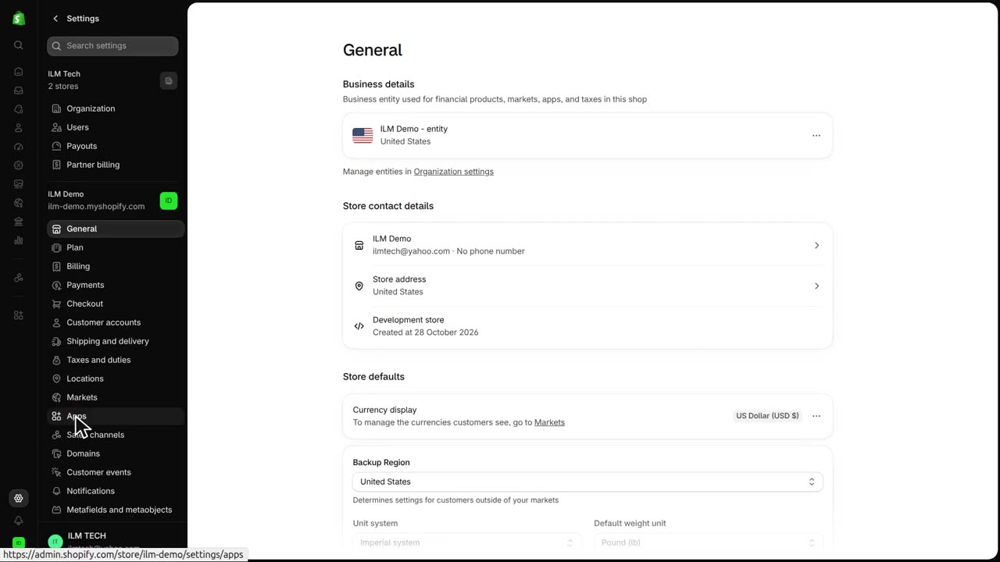
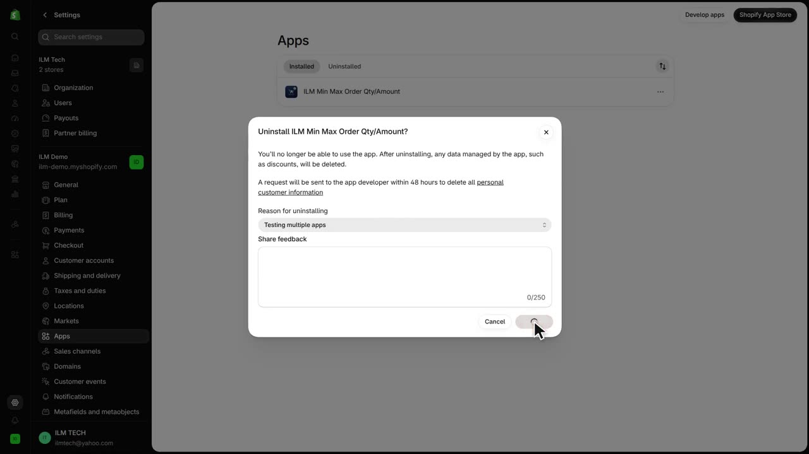
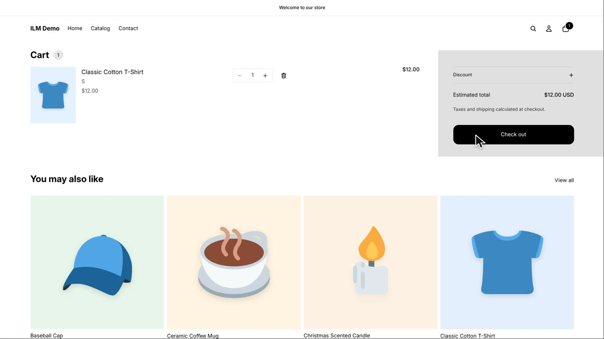

This lesson shows how to uninstall the app from your store and what happens to your shop and your rules afterwards. Uninstalling is useful when you want to stop using the app, switch to another solution, or simply start fresh. We will use the Classic Cotton T-shirt as our example, which currently has a minimum order quantity of three. You will see the rule disappear from the storefront and learn how long your saved rules are kept.
With the app still installed, the Classic Cotton T-shirt product page shows its minimum of three. When a shopper adds just one T-shirt to the cart, the cart page displays a notice that the minimum quantity is not met.

Now go to your Shopify admin. Open Settings, then click Apps. This is where all installed apps are listed, including ILM Min Max Order Qty/Amount.

Find ILM Min Max Order Qty/Amount in the list and open its More actions menu, then click Uninstall. Shopify asks why you are uninstalling: select a reason such as Testing multiple apps, then confirm by clicking Uninstall. The app is now removed from your store.

Back in your shop, the Classic Cotton T-shirt no longer shows the minimum quantity line. A shopper can now add just one T-shirt and proceed to checkout without any restriction. Shopify automatically removes the app embed and the checkout rule, so no code is left behind in your theme.

Your rules are kept for forty-eight hours after uninstalling. If you reinstall the app within that time, your rules will be restored. After forty-eight hours, the app deletes your store data permanently.